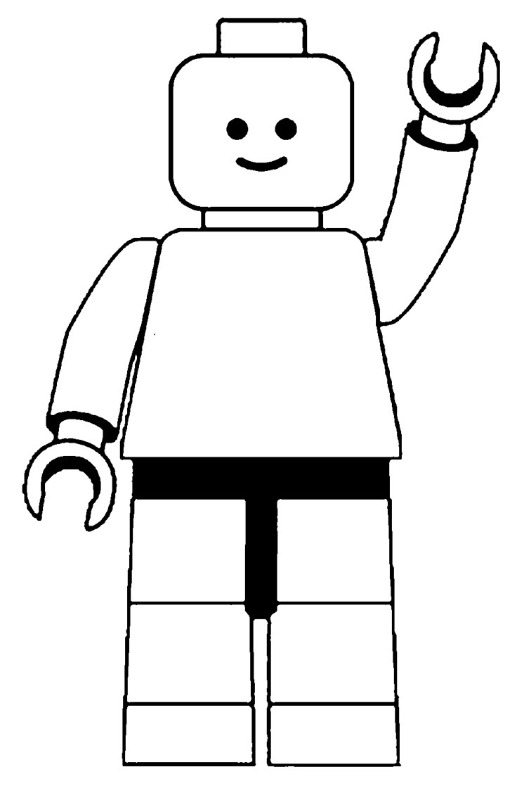

BrickOS
7/10/2026 3:45 PM
Hi, welcome to my LEGO themes operating system. Lego has been one of my favorite hobbies because it lets be build and create big or small projects, letting me have fun in a creative way.
Some of my favorite LEGO themes are:
Visit the actual LEGO website: LEGO
The word LEGO comes from the Danish words "Leg Godt, which means "Play Well."
Brick is the basic building block used in Lego sets.
Every build is designed by many engineers who come together and go through a huge process of designing, engineering, and testing the LEGO sets.
Build.
Create.
Share.
